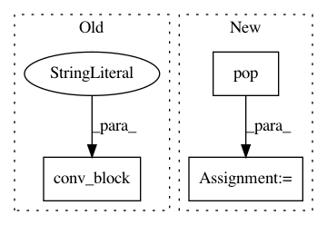

5bfdba356f31723366a17dbc2421f345c9273199,dataset/models/tf/resnet.py,ResNet,block,#Any#Any#Any#,135
Before Change
x_channels = cls.channels_shape(x, data_format)
if inputs_channels != x_channels or strides > 1:
shortcut = conv_block(inputs, "c", x_channels, 1, name="shortcut", strides=strides, **kwargs)
else:
shortcut = inputs
if se_block:
After Change
kwargs = cls.fill_params("body/block", **kwargs)
filters, downsample = cls.pop(["filters", "downsample"], kwargs)
bottleneck, bottleneck_factor = cls.pop(["bottleneck", "bottleneck_factor"], kwargs)
resnext, resnext_factor = cls.pop(["resnext", "resnext_factor"], kwargs)
se_block, se_factor = cls.pop(["se_block", "se_factor"], kwargs)
activation = kwargs.get("activation")
In pattern: SUPERPATTERN
Frequency: 3
Non-data size: 3
Instances
Project Name: analysiscenter/batchflow
Commit Name: 5bfdba356f31723366a17dbc2421f345c9273199
Time: 2017-11-28
Author: rhudor@gmail.com
File Name: dataset/models/tf/resnet.py
Class Name: ResNet
Method Name: block
Project Name: analysiscenter/batchflow
Commit Name: 1973269eb8554237642cc5912f61269ae8f1ae1d
Time: 2017-12-11
Author: rhudor@gmail.com
File Name: dataset/models/tf/linknet.py
Class Name: LinkNet
Method Name: decoder_block
Project Name: analysiscenter/batchflow
Commit Name: 1973269eb8554237642cc5912f61269ae8f1ae1d
Time: 2017-12-11
Author: rhudor@gmail.com
File Name: dataset/models/tf/linknet.py
Class Name: LinkNet
Method Name: head